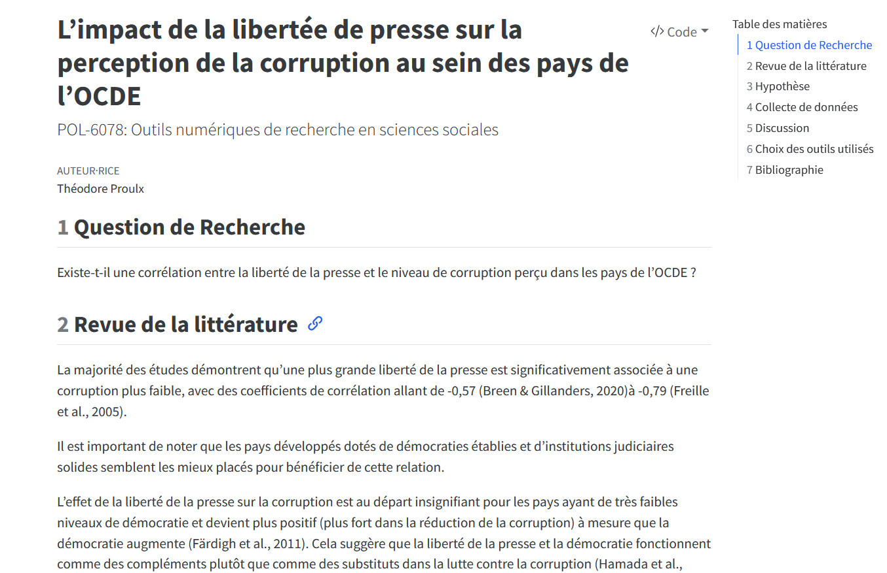
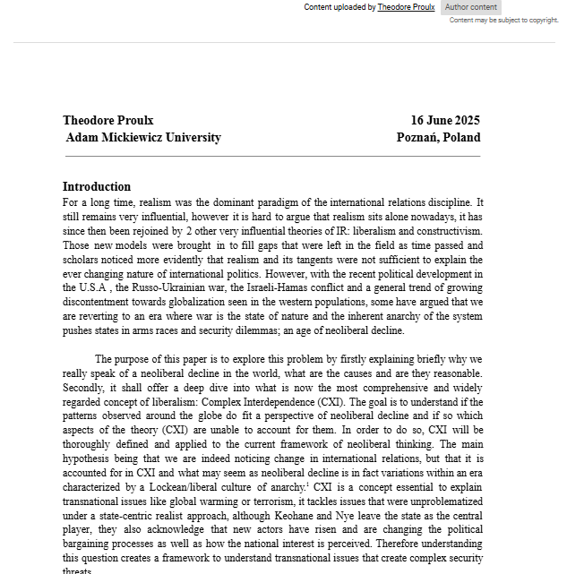

Final Project
Analysis of the correlation between press freedom and the perception of corruption in OECD countries.
Learn moreBachelor's degree in International Relations, 2022-2025, Adam Mickiewicz University, Poznan
Master's Degree in International Politics, 2025-, Laval University, Québec
French (native),
English (professional, IELTS score 8 / C1),
Polish (intermediate),
Spanish (beginner)

Analysis of the correlation between press freedom and the perception of corruption in OECD countries.
Learn moreIn progress
Unpredictability and Nonlinearity: Emergence in Theories of International Relations
Learn more
Understanding Complex Interdependence in an Age of Neoliberal Decline
Learn more